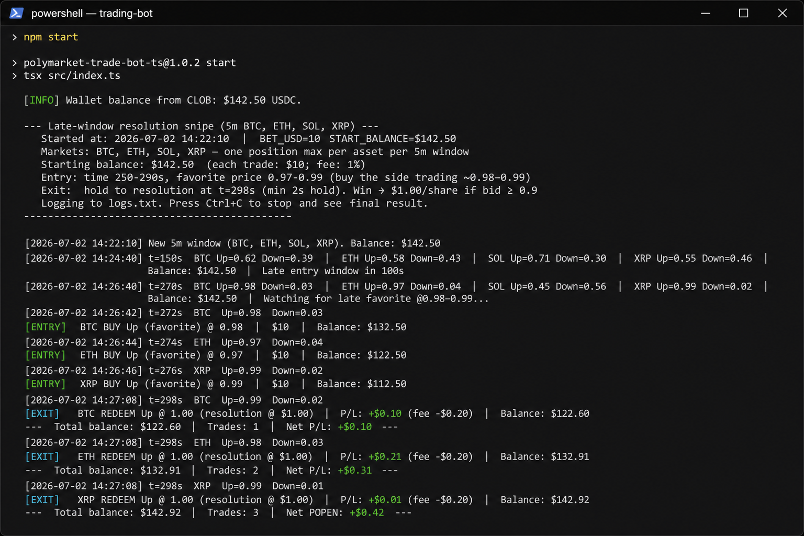

Track record — nagi777
17,000+Predictions
~$1,111Biggest win
4 assetsBTC · ETH · SOL · XRP
300 sWindow duration
How the polymarket trading bot works
| Phase | Time | Action |
|---|---|---|
| Merge trading | 0–250 s | Buy Up + Down when combined < $1.00 → MERGE to USDC |
| Late snipe | 250–290 s | Buy favorite @ $0.97–$0.99 |
| Resolution | ~298 s | Redeem @ $1.00 if correct |
Features
- Polymarket CLOB bot — Gamma API discovery + live price polling
- Multi-asset — BTC, ETH, SOL, XRP 5-minute Up/Down in parallel
- Late-window entry — seconds 250–290, price band $0.97–$0.99
- Resolution exit — hold to ~298 s, $1.00 payout on wins
- Full logging — console + logs.txt, wallet balance sync

Quick start
git clone https://github.com/erikarandr/polymarket-trading-bot.git
cd polymarket-trading-bot
npm install
cp .env.example .env
npm startRequires Node.js ≥ 20.6. Set POLYMARKET_PRIVATE_KEY in .env.
FAQ
What is a polymarket trading bot?
Software that exploits when Up + Down shares cost less than $1 combined (merge arb), or when late-window favorites are mispriced vs $1.00 resolution.
Who built this bot?
nagi777 — high-volume Polymarket trader on 5-minute crypto markets. Wallet: 0xbf337426…
Is it a merge trading bot or snipe bot?
Both. The full nagi777 stack uses merge trading plus late snipes. This open-source release ships the snipe module; merge arb is on the roadmap.
Does it work on BTC only?
No — the bot monitors BTC, ETH, SOL, and XRP simultaneously. The live profile is BTC-heavy.